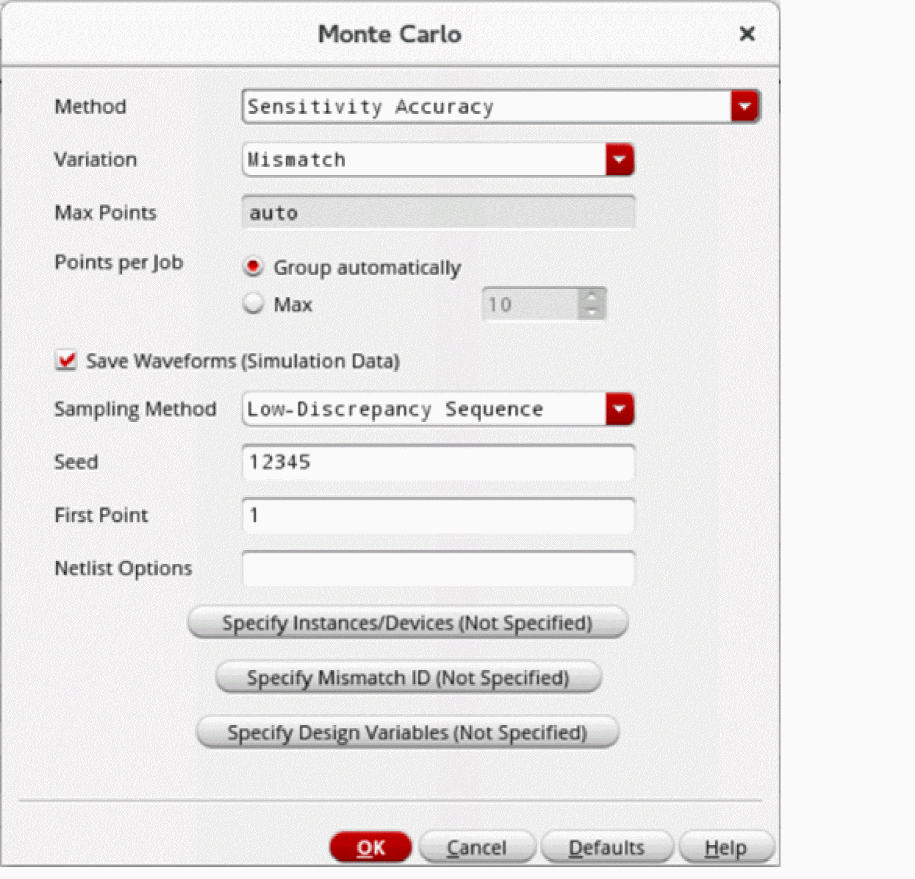
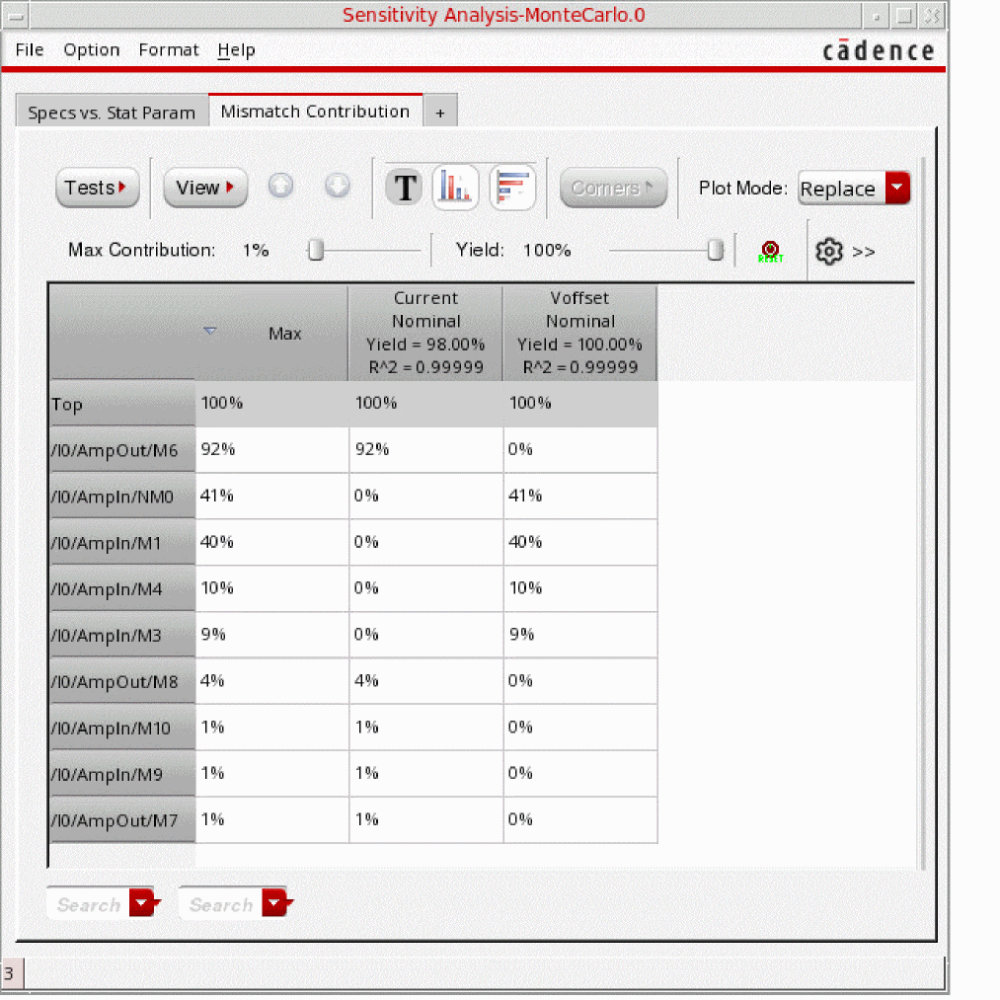

Running Mismatch Contribution Analysis
To run mismatch contribution analysis:
- Open your design in ADE Assembler or ADE Explorer.
- From the Run Mode drop-down list, select Monte Carlo Sampling.
-
Click the Simulation Options command.
The Monte Carlo form opens.
 - From the Method drop-down list, select Sensitivity Accuracy.
- From the Variation drop-down list, select Mismatch.
-
Select the Save Waveform (Simulation Data) check box to save the waveform data so that it can be used later for post-processing.
The modeling of variation in the outputs due to statistical variation can be done by using the post-processing option to view and analyze the mismatch contribution results. Therefore, for mismatch contribution analysis, it is required that you select this check box to save the data for Monte Carlo analysis so that it can be later used for post-processing. - From the Sampling Method drop-down list, select Low-Discrepancy Sequence.
- Click OK to close the Monte Carlo form.
- Click Run Simulation to run the mismatch contribution analysis.
After the Monte Carlo run is complete, the Sensitivity Analysis-MonteCarlo.N form opens, displaying the results of mismatch contribution analysis in the Mismatch Contribution tab.

Related Topics
Mismatch Contribution Analysis
Viewing Results of Mismatch Contribution Analysis
Return to top